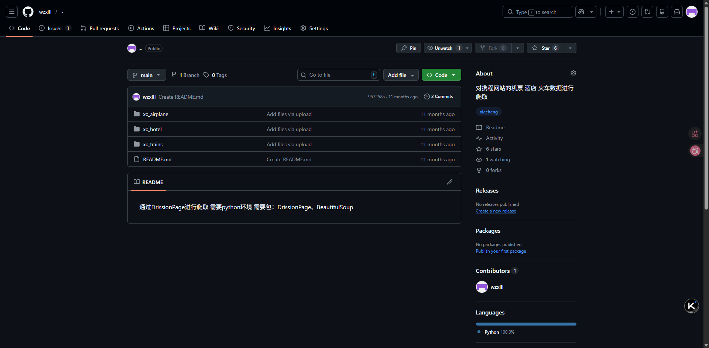
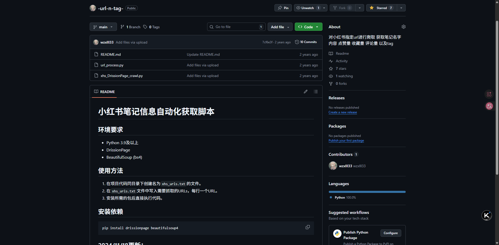

My Projects
Here are two major projects I've worked on, with detailed descriptions and technologies used.

Ctrip Flight Data Scraper
Timeline: Jan 2025 - Apr 2025
Tech Stack: Python, Selenium, BeautifulSoup, Pandas, GitHub Actions
Description: This project automates the collection of flight data from Ctrip (a major travel platform) for routes across China. The scraper extracts detailed information including departure/arrival times, ticket prices, flight numbers, origin/destination airports, and connection details (if any). Data is stored in CSV format and regularly updated via GitHub Actions to ensure freshness.
Key Features:
- Handles dynamic content loading with Selenium.
- Implements anti-blocking techniques (random delays, user-agent rotation).
- Data cleaning and normalization using Pandas.
- Scheduled weekly updates via GitHub Actions, with data published in the repository.
- Over 10,000 flight records collected and maintained.

Xiaohongshu Tag Scraper & Recommendation Agent
Timeline: May 2025 - Aug 2025
Tech Stack: Python, Selenium, Scrapy, Pandas, scikit-learn, Transformers, Flask
Description: This project focuses on collecting and analyzing hashtag data from Xiaohongshu (Little Red Book), a popular social platform. The scraper gathers tags (hashtags) used in posts along with their associated like, comment, and bookmark counts. After cleaning and preprocessing, the data is used to train a machine learning model that recommends optimal tags for new content based on the post's theme or keywords, aiming to maximize engagement.
Key Features:
- Scrapes tag metadata from public Xiaohongshu posts using a combination of Selenium and Scrapy, handling infinite scroll and login-free access.
- Collects over 50,000 unique tags with engagement metrics over a three-month period.
- Performs text preprocessing (tokenization, stopword removal) and feature extraction (TF-IDF, word embeddings).
- Trains a recommendation model using a hybrid approach: content-based filtering (using tag co-occurrence) and a neural network that maps post themes to high-engagement tags.
- Deploys a simple Flask API where users can input a short description or keywords and receive a list of recommended tags with predicted engagement scores.